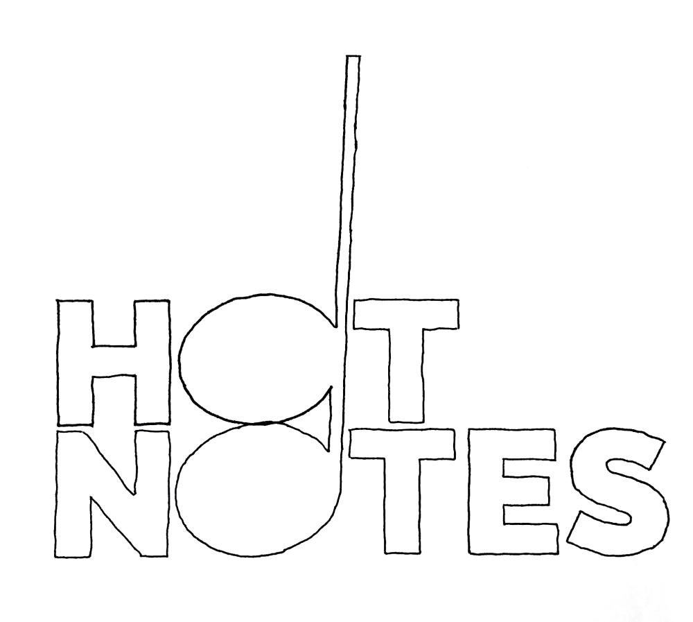

A logo and merch mockups for Fordham University’s premiere a cappella group
The Hot Notes needed a new logo to match their rivals’, the B-Sides. My brother, a singer in the Hot Notes, reached out to me to create something bold and organic.
A cappella music is a genre with no machinery. The most industrialized thing you’ll see onstage at a Hot Notes concert is a pitch pipe and their bright red uniforms. Other than that, it’s all vocal cords and larynxes. My logo-wordmark evokes this same humanity, while retaining the boldness of live choral music.

I traced a layout of the logo by hand, to give the wordmark the same humanity that a cappella music evokes

The final logo has the imperfections of a human touch but the boldness of a black sans serif

This colorway goes great on a black t-shirt!